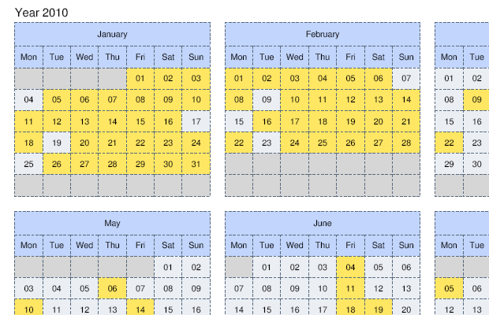
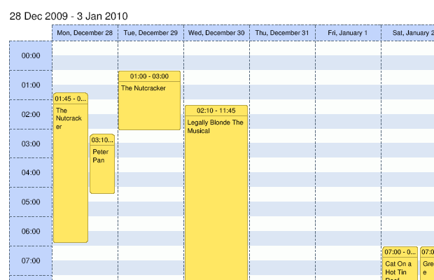

Export to PDF
Installation
Grab the latest package from http://dhtmlx.com/x/download/regular/scheduler-pdf-php.zip .
Unpack it somewhere under the web root ( you will need to enable php for this installation ).
The Java version of the package can be found at: http://dhtmlx.com/x/download/regular/scheduler-pdf-java.zip.
Necessary includes
On the scheduler page you need to include one more extension:
<script src="codebase/ext/dhtmlxscheduler_pdf.js"></script>
In older versions of the scheduler this file can be missed in the codebase folder. In such a case you may use the dhtmlxscheduler_pdf.js from the latest package.
Printing triggering
To export scheduler data to PDF you just need to add a button on the page, which will call the toPDF() method. The parameter of the toPDF() method is the url of the script, which has been installed previously:
<input type="button" name="save" value="save" onclick="scheduler.toPDF('path/to/folder/generate.php')" style="right:300px; width:80px; position:absolute; top:1px;">



Configuring service
To configure the export options you need to deal with both client- and server-sides.
Client-side
As mentioned above, for export activation you should use the method toPDF():
scheduler.toPDF(path, color, header, footer);
Parameters:
- path - (url) the path to the php file which generates PDF-file. See details .
- color - ('color', 'gray', 'bw', 'custom', 'fullcolor') specifies colormap.
- 'color' - full-color printing, default value.
- 'gray' - prints in shades of black and white.
- 'bw' - uses only black and white colors.
- 'custom' - can be used to enable a custom colormap ( requires php coding, see ).
- 'fullcolor' - actual background and text colors that are used while exporting.
- header - (boolean, optional) defines whether a header will be added to the page. By default, false.
See details . - footer - (boolean, optional) defines whether a footer will be added to the page. By default, false.
See details .
So, to your HTML page you should add a code line that will call toPDF() method with the appropriate number of the parameters. For example, it may look like:
scheduler.toPDF('path/to/folder/generate.php','gray');
Server-side
In the code snippet above generate.php is a php file that defines export options.
The simplest sample of the file is:
$scPDF = new schedulerPDF(); $scPDF->printScheduler($xml);
But before executing the printScheduler() method you can apply some custom configuration options:
Size of elements:
// the height of the header of the day container in the month mode $scPDF->monthDayHeaderHeight = 6; // the height of the header in the month mode $scPDF->monthHeaderHeight = 8; // the height of the month name container in the year mode $scPDF->yearMonthHeaderHeight = 8; // height of the row in the agenda mode $scPDF->agendaRowHeight = 6; // the height of the header in the day and week mode $scPDF->dayTopHeight = 6; // the width of the left scale in the day and week mode $scPDF->dayLeftWidth = 16;
Font size:
// font size settings $scPDF->monthHeaderFontSize = 9; $scPDF->monthDayHeaderFontSize = 8; $scPDF->monthEventFontSize = 7; $scPDF->yearHeaderFontSize = 8; $scPDF->yearFontSize = 8; $scPDF->agendaFontSize = 8; $scPDF->dayHeaderFontSize = 7; $scPDF->dayScaleFontSize = 8; $scPDF->dayEventHeaderFontSize = 7; $scPDF->dayEventBodyFontSize = 7; $scPDF->todayFontSize = 11;
Custom colors ( be sure to use the 'custom' value as the name of colormap on client-side ):
$scPDF->lineColor = '586A7E'; $scPDF->bgColor = 'C2D5FC'; $scPDF->dayHeaderColor = 'EBEFF4'; $scPDF->dayBodyColor = 'FFFFFF'; $scPDF->dayHeaderColorInactive = 'E2E3E6'; $scPDF->dayBodyColorInactive = 'ECECEC'; $scPDF->headerTextColor = '2F3A48'; $scPDF->textColor = '2F3A48'; $scPDF->eventTextColor = '887A2E'; $scPDF->eventBorderColor = 'B7A543'; $scPDF->eventColor = 'FFE763'; $scPDF->todayTextColor = '000000'; $scPDF->scaleColorOne = 'FCFEFC'; $scPDF->scaleColorTwo = 'DCE6F4'; $scPDF->yearDayColor = 'EBEFF4'; $scPDF->yearDayColorInactive = 'd6d6d6';
Headers and footers:
// the height of the header $headerImgHeight = 40; // the height of the footer $footerImgHeight = 40; // the path to the header image $headerImg = './header.png'; // the path to the footer image $footerImg = './footer.png';
Header and Footer
It's possible to define a custom header and footer for each page.
To achieve that you should make the following steps:
- create images with the names ”header.png” and ”footer.png”.
- copy those images to the same folder where generate.php resides.
- on client-side, change code call as:
scheduler.toPDF(url, "color", true, true);
As result, you will have ”header.png” and ”footer.png” images as the header and footer on all pages in the generated pdf file.
Error reporting
If output of PDF file is failed, there must be the file named as “error_report_xxxx.xml”. Please, send this file with any bug-reports.
If output doesn't fail, but still has some problems, you can edit generate.php and change
$debug = false;
as
$debug = true;
As result, there will be a new file saved, with the name “debug_xxxxx.xml”. Please, send it with the related error report.